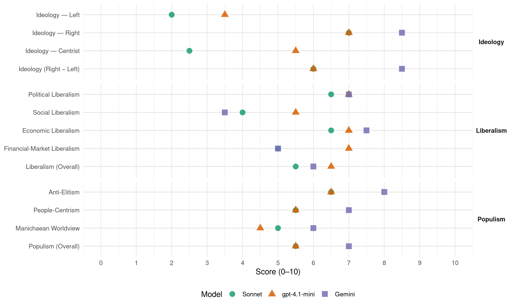

AN (Italy, 1994)
manifesto_id 32710_199403
Get full text: This site shows derived annotations and short verbatim quotes only. The full manifesto text is © Manifesto Project / WZB — obtain it via manifesto-project.wzb.eu using the manifesto_id above.
Headline scores
| Dimension | Sonnet | gpt-4.1-mini | Gemini |
|---|---|---|---|
| Populism (Overall) | 5.5 | 5.5 | 7.0 |
| Anti-Elitism | 6.5 | 6.5 | 8.0 |
| People-Centrism | 5.5 | 5.5 | 7.0 |
| Manichaean Worldview | 5.0 | 4.5 | 6.0 |
| Ideology (Right − Left) | 6.0 | 6.0 | 8.5 |
| Liberalism (Overall) | 5.5 | 6.5 | 6.0 |
| Political Liberalism | 6.5 | 7.0 | 7.0 |
| Social Liberalism | 4.0 | 5.5 | 3.5 |
| Economic Liberalism | 6.5 | 7.0 | 7.5 |
| Financial-Market Liberalism | 5.0 | 7.0 | 5.0 |
Evidence per dimension
Economic Liberalism
Gemini · score 8.0 · verified · chunk 1
“principio del mercato libero e paritario”
autentica libertà economica, basata sul principio del mercato libero e paritario nel quale deve essere garantita l’iniziativa
Gemini · score 7.0 · verified · chunk 2
“procedere alla privatizzazione, come il Msi-Dn chiede”
Per quanto riguarda «II Giorno», non c’è che da procedere alla privatizzazione, come il Msi-Dn chiede da tempo.
gpt-4.1-mini · score 8.0 · verified · chunk 1
“principio del mercato libero e paritario, iniziativa privata, concorrenza”
La libertà politica non può non trovare la necessaria corrispondenza in una autentica libertà economica, basata sul principio del mercato libero e paritario nel quale deve essere garantita l’iniziativa privata svolta responsabilmente dai singoli e dai cittadini associati e nel quale ogni soggetto deve avere pari opportunità di accesso al credito, all’innovazione e al mercato.
gpt-4.1-mini · score 6.0 · verified · chunk 2
“potenziamento della ricerca scientifica, considerando la spesa ad essa relativa come investimento a lungo termine”
…potenziamento della ricerca scientifica, considerando la spesa ad essa relativa come investimento a lungo termine che avvantaggerà l’economia nazionale.
Sonnet · score 7.0 · verified · chunk 1
“libertà economica, basata sul principio del mercato libero”
una autentica libertà economica, basata sul principio del mercato libero e paritario nel quale deve essere garantita l’iniziativa privata
Sonnet · score 6.0 · verified · chunk 2
“privatizzazione, come il Msi-Dn chiede da tempo”
Per quanto riguarda «Il Giorno», non c’è che da procedere alla privatizzazione, come il Msi-Dn chiede da tempo
Financial-Market Liberalism
Gemini · score 7.0 · verified · chunk 1
“pari opportunità di accesso al credito”
associati e nel quale ogni soggetto deve avere pari opportunità di accesso al credito, all’innovazione e al mercato.
Gemini · score 3.0 · verified · chunk 2
“predominio dei grandi gruppi economico-finanziari”
Maastricht ha voluto far dipendere l’avvenire dell’Europa dal predominio dei grandi gruppi economico-finanziari che hanno accentuato le divisioni
gpt-4.1-mini · score 7.0 · verified · chunk 1
“accesso al credito, mercato azionario, risparmio privato”
La dismissione di molte aziende pubbliche deve essere attuata favorendo vaste forme di azionariato popolare e l’accesso al mercato azionario del risparmio privato, per favorire impieghi produttivi invece della distruzione delle risorse attraverso meccanismi parassitari.
Sonnet · score 6.0 · verified · chunk 1
“accesso al mercato azionario del risparmio privato”
favorendo vaste forme di azionariato popolare e l’accesso al mercato azionario del risparmio privato, per favorire impieghi produttivi
Sonnet · score 4.0 · verified · chunk 2
“speculazioni finanziarie o di intese politiche parziali”
Abbiamo respinto i tentativi di sopraffazioni da parte di un Paese comunitario nei confronti di altri, sotto l’aspetto di speculazioni finanziarie o di intese politiche parziali
Political Liberalism
Gemini · score 8.0 · verified · chunk 1
“La libertà politica non può non”
coordinati da Maurizio Gasparri, Raffaele Valensise e Gaetano Rasi. La libertà politica non può non trovare la necessaria corrispondenza
Gemini · score 6.0 · verified · chunk 2
“Parlamento rappresenta e simbolizza l’unità nazionale”
uno Stato gode dell’interezza democratica quando il Parlamento rappresenta e simbolizza l’unità nazionale ed è l’espressione della volontà popolare
gpt-4.1-mini · score 7.0 · verified · chunk 1
“la democrazia, i diritti, le elezioni, i tribunali, i media”
La libertà politica non può non trovare la necessaria corrispondenza in una autentica libertà economica, basata sul principio del mercato libero e paritario nel quale deve essere garantita l’iniziativa privata svolta responsabilmente dai singoli e dai cittadini associati e nel quale ogni soggetto deve avere pari opportunità di accesso al credito, all’innovazione e al mercato.
gpt-4.1-mini · score 7.0 · verified · chunk 2
“Parlamenti nazionali sono i garanti di questa legittimità democratica”
…uno Stato gode dell’interezza democratica quando il Parlamento rappresenta e simbolizza l’unità nazionale… I Parlamenti nazionali sono i garanti di questa legittimità democratica e dell’unità nazionale…
Sonnet · score 7.0 · verified · chunk 1
“le regole della democrazia rappresentano per il Msi-Dn l’unico processo”
Le regole della democrazia, insomma, rappresentano per il Msi-Dn l’unico processo da seguire, in discontinuità col vecchio, per condurre al nuovo.
Sonnet · score 6.0 · verified · chunk 2
“legittimità democratica e dell’unità nazionale”
I Parlamenti nazionali sono i garanti di questa legittimità democratica e dell’unità nazionale, due termini indissociabili che divengono il fondamento della democrazia europea
Liberalism (Overall)
Gemini · score 7.0 · verified · chunk 1
“principio del mercato libero e paritario”
autentica libertà economica, basata sul principio del mercato libero e paritario nel quale deve essere garantita l’iniziativa
Gemini · score 5.0 · verified · chunk 2
“procedere alla privatizzazione, come il Msi-Dn chiede”
Per quanto riguarda «II Giorno», non c’è che da procedere alla privatizzazione, come il Msi-Dn chiede da tempo.
gpt-4.1-mini · score 7.0 · verified · chunk 1
“principio del mercato libero e paritario, iniziativa privata, concorrenza”
La libertà politica non può non trovare la necessaria corrispondenza in una autentica libertà economica, basata sul principio del mercato libero e paritario nel quale deve essere garantita l’iniziativa privata svolta responsabilmente dai singoli e dai cittadini associati e nel quale ogni soggetto deve avere pari opportunità di accesso al credito, all’innovazione e al mercato.
gpt-4.1-mini · score 6.0 · verified · chunk 2
“Parlamenti nazionali sono i garanti di questa legittimità democratica”
…uno Stato gode dell’interezza democratica quando il Parlamento rappresenta e simbolizza l’unità nazionale… I Parlamenti nazionali sono i garanti di questa legittimità democratica e dell’unità nazionale…
Sonnet · score 6.0 · verified · chunk 1
“mercato libero e paritario”
L’integrazione nell’economia europea e mondiale, nel quadro di un mercato libero e paritario, può essere pienamente compatibile con un forte mercato nazionale
Sonnet · score 5.0 · verified · chunk 2
“nel giusto equilibrio tra intervento pubblico ed iniziativa privata”
Lo Stato deve intervenire attraverso il Ssn che garantisca uno standard omogeneo di assistenza, nel giusto equilibrio tra intervento pubblico ed iniziativa privata
Anti-Elitism
Gemini · score 8.0 · verified · chunk 1
“autentiche succursali del potere partitocratico”
degenerazione di molte imprese pubbliche, finora trasformate in autentiche succursali del potere partitocratico. E’ comunque necessaria
Gemini · score 8.0 · verified · chunk 2
“struttura burocratica gestita dai partiti di potere”
E urgente una revisione completa della gigantesca ma inefficiente struttura burocratica gestita dai partiti di potere per alimentare le proprie clientele elettorali
gpt-4.1-mini · score 6.0 · verified · chunk 1
“trasformate in autentiche succursali del potere partitocratico”
Il processo di privatizzazione deve avere anche l’obiettivo di porre termine alla degenerazione di molte imprese pubbliche, finora trasformate in autentiche succursali del potere partitocratico.
gpt-4.1-mini · score 7.0 · verified · chunk 2
“gigantesca ma inefficiente struttura burocratica gestita dai partiti di potere”
E urgente una revisione completa della gigantesca ma inefficiente struttura burocratica gestita dai partiti di potere per alimentare le proprie clientele elettorali, che sperpera i contributi dei cittadini invece di tutelarne la salute.
Sonnet · score 7.0 · verified · chunk 1
“degenerazione di molte imprese pubbliche, finora trasformate in autentiche succursali del potere partitocratico”
Il processo di privatizzazione deve avere anche l’obiettivo di porre termine alla degenerazione di molte imprese pubbliche, finora trasformate in autentiche succursali del potere partitocratico.
Sonnet · score 6.0 · verified · chunk 2
“gigantesca ma inefficiente struttura burocratica gestita dai partiti di potere”
E urgente una revisione completa della gigantesca ma inefficiente struttura burocratica gestita dai partiti di potere per alimentare le proprie clientele elettorali
Ideology — Centrist
gpt-4.1-mini · score 6.0 · verified · chunk 1
“attribuzione all’elettore di due voti, uno per il governo e uno per il Parlamento”
Il Msi-Dn è per il superamento del vecchio meccanismo della delega e per l’attribuzione all’elettore di due voti, uno per il governo e uno per il Parlamento, uno per decidere chi e come deve governare (e per giudicare se e come ha governato) ed uno per scegliere chi e come deve controllare.
gpt-4.1-mini · score 5.0 · verified · chunk 2
“politica intesa come strumento per creare uno Stato che unisca la necessita della Nazione ai bisogni del singolo”
…ripristinare il concetto di politica intesa come strumento per creare uno Stato che unisca la necessita della Nazione ai bisogni del singolo.
Sonnet · score 3.0 · verified · chunk 1
“destra di governo”
rappresentando la destra di governo, lavora per l’europeizzazione del quadro politico
Sonnet · score 2.0 · verified · chunk 2
“senza servilismo o sudditanze”
Dobbiamo reagire nel quadro dell’alleanza europea e occidentale, sempre in coerenza con una nostra linea antica, con lealtà, senza servilismo o sudditanze
Ideology — Left
gpt-4.1-mini · score 3.0 · verified · chunk 1
“superamento di ogni conflittualità vetero classista”
Il tutto nel quadro di una grande alleanza nazionale da creare nel mondo del lavoro e della produzione, che si ponga l’obiettivo del superamento di ogni conflittualità vetero classista, per creare un’economia di mercato, di partecipazione e di codeterminazione tra le categorie,
gpt-4.1-mini · score 4.0 · verified · chunk 2
“sperpera i contributi dei cittadini invece di tutelarne la salute”
E urgente una revisione completa della gigantesca ma inefficiente struttura burocratica gestita dai partiti di potere per alimentare le proprie clientele elettorali, che sperpera i contributi dei cittadini invece di tutelarne la salute.
Sonnet · score 2.0 · verified · chunk 1
“solidarietà, sulla tutela di un’economia aperta”
su una concorrenza che non trascuri i doveri di solidarietà, sulla tutela di un’economia aperta ma non rassegnata alla subordinazione a gruppi esteri
Sonnet · score 2.0 · verified · chunk 2
“internazionalismo marxista o sull’adesione alle teorie”
aveva cercato di proporre modelli di riferimento basati sull’internazionalismo marxista o sull’adesione alle teorie dello sfruttamento mondialista
Ideology (Right − Left)
Gemini · score 8.0 · verified · chunk 1
“identità e nell’unità nazionale i valori”
contrastare qualunque istinto xenofobo, non solo individuando una via di tolleranza, ma individuando anzitutto nell’identità e nell’unità nazionale i valori di un popolo
Gemini · score 9.0 · verified · chunk 2
“identità nazionale, la libertà, il diritto alla vita”
un progetto politico dove valori come l’identità nazionale, la libertà, il diritto alla vita, la famiglia e solidarietà, sono la base
gpt-4.1-mini · score 6.0 · verified · chunk 1
“evitare il rischio di vere e proprie”colonizzazioni” di interi settori produttivi”
L’integrazione nell’economia europea e mondiale, nel quadro di un mercato libero e paritario, può essere pienamente compatibile con un forte mercato nazionale, in grado di evitare il rischio di vere e proprie “colonizzazioni” di interi settori produttivi (si pensi al comparto alimentare).
gpt-4.1-mini · score 6.0 · verified · chunk 2
“valori come l’identità nazionale, la libertà, il diritto alla vita, la famiglia e solidarietà”
…un progetto politico dove valori come l’identità nazionale, la libertà, il diritto alla vita, la famiglia e solidarietà, sono la base per iniziare insieme un cammino per ricostruire la Nazione.
Sonnet · score 6.0 · verified · chunk 1
“difesa della produzione nazionale è uno dei compiti prioritari della Destra”
La difesa della produzione nazionale è uno dei compiti prioritari della Destra politica, la quale sostiene non una anacronistica forma autarchica
Sonnet · score 6.0 · verified · chunk 2
“sovranità nazionali”
consolidando i principii della libertà uniti a quelli delle sovranità nazionali, puntando come primo obiettivo a far cessare definitivamente le nefande conseguenze
Ideology — Right
Gemini · score 8.0 · verified · chunk 1
“identità e nell’unità nazionale i valori”
contrastare qualunque istinto xenofobo, non solo individuando una via di tolleranza, ma individuando anzitutto nell’identità e nell’unità nazionale i valori di un popolo
Gemini · score 9.0 · verified · chunk 2
“identità nazionale, la libertà, il diritto alla vita”
un progetto politico dove valori come l’identità nazionale, la libertà, il diritto alla vita, la famiglia e solidarietà, sono la base
gpt-4.1-mini · score 7.0 · verified · chunk 1
“evitare il rischio di vere e proprie”colonizzazioni” di interi settori produttivi”
L’integrazione nell’economia europea e mondiale, nel quadro di un mercato libero e paritario, può essere pienamente compatibile con un forte mercato nazionale, in grado di evitare il rischio di vere e proprie “colonizzazioni” di interi settori produttivi (si pensi al comparto alimentare).
gpt-4.1-mini · score 7.0 · verified · chunk 2
“valori come l’identità nazionale, la libertà, il diritto alla vita, la famiglia e solidarietà”
…un progetto politico dove valori come l’identità nazionale, la libertà, il diritto alla vita, la famiglia e solidarietà, sono la base per iniziare insieme un cammino per ricostruire la Nazione.
Sonnet · score 7.0 · verified · chunk 1
“L’ingresso in Italia di extracomunitari deve essere sospeso per cinque anni”
L’ingresso in Italia di ci extracomunitari,deve essere sospeso per cinque anni. In questo quinquennio, gli extracomunitari già presenti nel territorio devono essere censiti
Sonnet · score 7.0 · verified · chunk 2
“identità nazionale, la libertà, il diritto alla vita”
valori come l’identità nazionale, la libertà, il diritto alla vita, la famiglia e solidarietà, sono la base per iniziare insieme un cammino
Manichaean Worldview
Gemini · score 6.0 · verified · chunk 1
“Questo sforzo perverso è il punto”
collaborino alla diffusione di un modello postilluministico di vita. Questo sforzo perverso è il punto di arrivo di plurisecolari
Gemini · score 6.0 · verified · chunk 2
“patti scellerati di allora”
Repubblica Federale di Jugoslavia che aveva imposto, coni vincitori, i patti scellerati di allora; e non esistono più le condizioni
gpt-4.1-mini · score 4.0 · verified · chunk 1
“la ripresa, ancor più a carattere episodico e per mere ragioni di ordine pubblico”
Il Msi-Dn non può non denunciare la ripresa, ancor più a carattere episodico e per mere ragioni di ordine pubblico di quanto non fosse in precedenza, di interventi a tampone, assistenziali e senza specifiche finalità che vengono presi in tema occupazionale contraddicendo proprio ogni intento,
gpt-4.1-mini · score 5.0 · verified · chunk 2
“una nuova Yalta II”
Ma così come non può permanere Yalta, non può essere messa in vita una Yalta II.
Sonnet · score 5.0 · verified · chunk 1
“ha tradito nelle scelte essenziali i princìpi”
ha, col suo vertice, tradito nelle scelte essenziali i princìpi che erano, che sono, di quel mondo e più in generale, la tradizione di fede e di cultura del popolo Italiano
Sonnet · score 5.0 · verified · chunk 2
“forze politiche tradizionali hanno fallito”
Le forze politiche tradizionali, non solo quelle travolte dallo scandalo di tangentopoli, hanno fallito nell’opera che si erano prefissi
People-Centrism
Gemini · score 7.0 · verified · chunk 1
“riconsegna dello scettro ai cittadini”
dall’affermazione autentica della sovranità popolare, alla riconsegna dello scettro ai cittadini; dalla realizzazione di una
Gemini · score 7.0 · verified · chunk 2
“sperpera i contributi dei cittadini invece di tutelarne”
partiti di potere per alimentare le proprie clientele elettorali, che sperpera i contributi dei cittadini invece di tutelarne la salute.
gpt-4.1-mini · score 5.0 · verified · chunk 1
“una grande alleanza nazionale da creare nel mondo del lavoro e della produzione”
Il tutto nel quadro di una grande alleanza nazionale da creare nel mondo del lavoro e della produzione, che si ponga l’obiettivo del superamento di ogni conflittualità vetero classista, per creare un’economia di mercato, di partecipazione e di codeterminazione tra le categorie,
gpt-4.1-mini · score 6.0 · verified · chunk 2
“ogni cittadino contribuisce alla spesa sanitaria generale secondo le proprie capacità economiche”
Lo Stato deve assicurare il diritto alla salute a tutti i cittadini: ogni cittadino contribuisce alla spesa sanitaria generale secondo le proprie capacità economiche.
Sonnet · score 6.0 · verified · chunk 1
“lo scettro torni ai cittadini”
Un referendum sui caratteri fondamentali della Nuova Repubblica. Lo scettro torni ai cittadini.
Sonnet · score 5.0 · verified · chunk 2
“un debito che lo Stato assume verso i cittadini”
Si tratta, dunque, di un debito che lo Stato, per il fatto stesso che esiste, assume verso i cittadini, e non di una servitù che i cittadini assumono verso lo Stato
Populism (Overall)
Gemini · score 7.0 · verified · chunk 1
“autentiche succursali del potere partitocratico”
degenerazione di molte imprese pubbliche, finora trasformate in autentiche succursali del potere partitocratico. E’ comunque necessaria
Gemini · score 7.0 · verified · chunk 2
“struttura burocratica gestita dai partiti di potere”
E urgente una revisione completa della gigantesca ma inefficiente struttura burocratica gestita dai partiti di potere per alimentare le proprie clientele elettorali
gpt-4.1-mini · score 5.0 · verified · chunk 1
“trasformate in autentiche succursali del potere partitocratico”
Il processo di privatizzazione deve avere anche l’obiettivo di porre termine alla degenerazione di molte imprese pubbliche, finora trasformate in autentiche succursali del potere partitocratico.
gpt-4.1-mini · score 6.0 · verified · chunk 2
“gigantesca ma inefficiente struttura burocratica gestita dai partiti di potere”
E urgente una revisione completa della gigantesca ma inefficiente struttura burocratica gestita dai partiti di potere per alimentare le proprie clientele elettorali, che sperpera i contributi dei cittadini invece di tutelarne la salute.
Sonnet · score 6.0 · verified · chunk 1
“CINQUANT’ANNI di partitocrazia hanno spezzato il rapporto”
CINQUANT’ANNI di partitocrazia hanno spezzato il rapporto di responsabilità e di fiducia tra il cittadino e lo Stato.
Sonnet · score 5.0 · verified · chunk 2
“partiti di potere per alimentare le proprie clientele”
struttura burocratica gestita dai partiti di potere per alimentare le proprie clientele elettorali, che sperpera i contributi dei cittadini
Social Liberalism